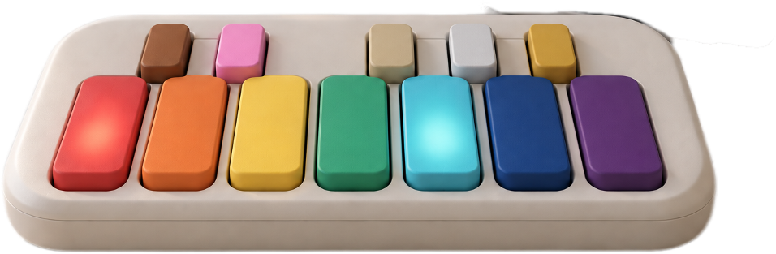

교습자에게 집중되는 준비와 지도 부담 Preparation and instruction fall entirely on the teacher
발달장애 아동을 위한 음악치료 솔루션 A music therapy solution for children with developmental disabilities
수준별 AI 편곡과 12음 점등 악기로,
비전공 교습자도 아동 한 명 한 명에게 맞는 합주를 준비할 수 있습니다.
Level-based AI arrangement and a 12-note light-up instrument — so any teacher,
specialist or not, can prepare an ensemble tuned to every single child.

발달장애 음악치료 수업 준비의 부담 The burden of preparing a music therapy session
아동마다 다른 연주 수준과 악보 이해도 Every child has a different playing level and score comprehension
각자의 수준에 맞춘 악기, 구간, 악보 조정 어려움 Adjusting instrument, passage and score to each level is hard
아동별 편곡 부담을 줄이는 개인별 연주 자료를 What if per-child arrangement materials were something
비전공 교습자도 쉽게 활용할 수 있다면? a non-specialist teacher could use easily?
경쟁사 기능 현황Competitive landscape
여섯 가지 기능을 모두 갖춘 곳은 없었습니다 No one else covers all six capabilities
| 기능Capability | 엔젤악기 핸드벨Angel Instruments Handbell |
미래엔·SeeD 모두의 음악Mirae-N · SeeD Music for All |
Open Orchestras Clarion |
Cosmo | |
|---|---|---|---|---|---|
| 색상 단서를 통한 음악 활동Color-cued music activity | |||||
| 앱 내 연주 방식 설정In-app play mode settings | |||||
| 물리 입력부의 점등Lit physical keys | |||||
| 12음 고정 배열Fixed 12-note layout | |||||
| 수준별 AI 음계 단순화Level-based AI scale simplification | |||||
| 연주 기록을 통한 개인화Personalization from play records |
가로로 스크롤하여 전체 표를 확인하세요.Scroll sideways to see the full table.
핵심 기능 1Core feature 1
수준별 AI 편곡 Level-based AI arrangement
곡 하나를 넣으면 아이마다 다른 파트가 나옵니다. 음계를 단순화하고, 선호 악기에 맞춰 파트를 나누고, 같은 박자 위에 다시 얹습니다. Put one song in, get a different part for every child — the scale simplified, the parts split by preferred instrument, and everything re-seated on one shared beat.
교습자The teacher
- 곡 선정Chooses the song
- 개인별 선호 악기 입력Enters each child’s preferred instrument
- 처음 사용할 음 개수 입력Sets the starting number of notes
’s HW
점등 신호를 통한 안내Guidance through lit key signals
’s SW
음계 단순화 · 개인별 파트 구성Scale simplification · per-child part assignment
[AI 편곡 구조][AI arrangement pipeline]
Symphony TabMusicXML · GP5
Parse & Splitvoices → parts
LLM Arranger1 JSON call
Validatorschema + range
검증된 편곡을 아동 수만큼 파트로 분배합니다 The validated arrangement fans out into one part per child
Player 1 · Leadguitar · advanced
e|--3-5-7-|--8-7-5-Player 2 · Harmonykeys · intermediate
B|--1-1-3-|--3-3---Player 3 · Bassbass · beginner
E|--0-----|--2-----Sync Layershared tempo · measure grid · cue points
핵심 기능 2Core feature 2
12음 배열과 수준별 활성화 A 12-note layout with level-based activation
- 음계에 대응하는 버튼 배열에 따른 음계 학습 효과 유지 A button layout that maps to the scale preserves the scale-learning effect
- 수준별 버튼 활성화로 단계별 음악치료 효과 증대 Level-based activation compounds the therapeutic effect step by step
활성화 음 개수Active notes
핵심 기능 3Core feature 3
악기별 합주 Ensemble by instrument
- 다양한 악기 구성을 통해 아동별 선호 반영 A range of instruments reflects each child’s preference
- 악기별 파트 분리를 통한 합주로 협동력, 사회성 향상 Separate parts per instrument build cooperation and social skills
박자에 따라 각자가 맡은 색과 음이 켜집니다. On each beat, the color and note each child owns lights up.
| 악기 / 박자Instrument / Beat | 1박Beat 1 | 2박Beat 2 | 3박Beat 3 | 4박Beat 4 |
|---|---|---|---|---|
| 아동 1 / 피아노Child 1 / Piano | 빨강 CRed C | 쉼Rest | 노랑 EYellow E | 쉼Rest |
| 아동 2 / 플루트Child 2 / Flute | 쉼Rest | 남색 ANavy A | 쉼Rest | 빨강 CRed C |
| 아동 3 / 현악기Child 3 / Strings | 빨강 CRed C | 쉼Rest | 쉼Rest | 초록 FGreen F |
가로로 스크롤하여 4박까지 확인하세요.Scroll sideways to reach beat 4.
핵심 기능 4Core feature 4
연주 기록 반영 Play records that feed back
- 오입력, 수행 능력 변화 데이터 분석을 통해 활성화 음 개수 제안 Analysis of mis-hits and performance change proposes the next number of active notes
- 아동별 난이도 조정을 통해 수행 수준 및 인지능력 향상 Per-child difficulty tuning raises performance level and cognitive ability
- 교습자 관찰 결과와 AI 추천의 대조를 통한 수행 능력 트래킹 Tracking that cross-checks teacher observation against the AI recommendation
[연주 기록 반영 구조][Play-record feedback structure]
Player Taps12-key input
TelemetryΔt key ±ms
Proficiencymean ±σ hit%
Level Decisiontier pick
Stream Adjtab re-emit
Orchestrator (LLM)intuition · slope
Progressionsession memory
수업에 Orffian을 들여보시겠어요? Want to bring Orffian into your sessions?
기관 도입, 시범 운영, 협업 문의를 환영합니다. 견적은 장비 수와 이용 범위에 따라 안내드립니다. We welcome institutional adoption, pilot programs and partnership enquiries. Quotes are scoped to device count and usage.